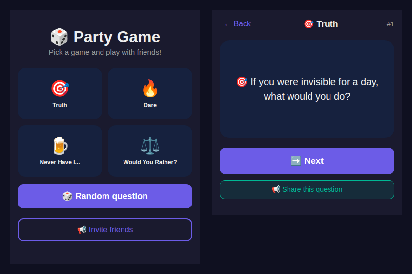

Best Telegram Party Games & Bots in 2026
Telegram isn't just for messaging anymore. With the Mini Apps platform, it's become a legitimate place for group entertainment. Whether you're at a party, on a video call, or just killing time in a group chat, a party game turns any conversation into an instant game night.
I've been running a Telegram party game of my own since March 2026, and this update is mostly about something I got wrong. The original version of this article told you to add a bot to your group and type /play. That advice has quietly stopped working — not just for my bot, but as a general pattern. Below is what changed, why it matters when you're picking a game, and what actually works now.
The thing nobody tells you about game bots
There are two completely different things people call "a Telegram game", and they fail in different ways.
A chat bot listens for commands. You add it to a group, type /play, and it replies with a question and some buttons. That reply comes from a server the operator is paying for and maintaining somewhere. Telegram is only the delivery pipe — the bot itself is a program someone else has to keep running, receiving updates and answering them.
A Mini App is a web page. Telegram opens it in an in-app browser and hands it a bit of context about you. Telegram's own documentation is blunt about the ambition here: with Mini Apps, developers "can use JavaScript to create infinitely flexible interfaces that can be launched right inside Telegram — and can completely replace any website". If the game logic and the questions ship inside that page, it needs no server at all once it's loaded.
Here's the practical consequence, and it's the reason I rewrote this article: when an operator stops paying for the backend, every chat-bot game dies silently. No error, no "this bot is gone" message. You type /play into a group and nothing happens at all. Meanwhile a static Mini App from the same operator keeps working indefinitely, because there's nothing left to switch off.
This happened to my own bot. I shut down the chat-command backend in May 2026 after it saw almost no group usage, and left the Mini App running. For weeks the old instructions in this very article kept telling people to add the bot to a group and type /play — into silence. That's my fault, and it's fixed below.
It is also not rare. I later sent a real /start to all 18 game bots recommended across three currently-ranking "best Telegram games" articles, and seven of the eighteen never replied at all — including Hangman, 2048 and Snake. So before you trust any list, including this one, press Start and count to fifteen.
/start. If nothing comes back within a few seconds, the backend is down and no amount of group-adding will help. If the bot's profile shows a Launch or Open App button, that's a Mini App and it will usually work regardless.
Why Telegram at all?
- Zero friction — everyone in the group already has it. No new app installs, no invite links to chase.
- Cross-platform by default — phone, tablet, desktop, web. The same game state follows the account.
- It's already where the group is — you don't have to talk five people into downloading something at a party. That is the entire ball game; most group apps die at this step.
- Mini Apps feel native — real interfaces, theme matching, haptics, instead of a wall of chat messages.
The three formats worth playing
1. Truth or Dare
The classic works well digitally, mostly because it removes the two things that kill it in person: running out of ideas, and the same person always inventing the dares. A good implementation gives you enough questions that repeats don't show up in one evening, and lets you escalate intensity rather than opening on something nobody wants to answer.
The failure mode to watch for is machine-translated question banks. A dare written for one culture and run through a translator reads as nonsense and kills the mood faster than a bad question. Prefer games with questions actually written in the language you're playing in.
2. Never Have I Ever
"I have never..." statements, and everyone reacts. This is the strongest icebreaker of the three, but only with people who already know each other a little. Start mild — "I've never been late to work" — and let it escalate naturally. The entertainment is the reactions, not the statements.
3. Would You Rather
Two bad options, one vote. This is the one that scales. With three people it's a shrug; with eight, the 50/50 splits produce genuine arguments. Good dilemmas are ones where you can defend both sides — anything obviously one-sided is dead on arrival.
What I actually built, and its real numbers
My own entry is a Mini App rather than a chat bot, for exactly the durability reason above. Being specific about it, since vague claims are cheap:
| Mode | Questions (English) | Questions (Ukrainian) |
|---|---|---|
| Truth | 44 | 44 |
| Dare | 30 | 30 |
| Never Have I Ever | 38 | 38 |
| Would You Rather | 39 | 39 |
| Total | 151 | 151 |
That's 302 questions across both languages, written separately rather than translated. An earlier version of this page claimed "216+ questions in Ukrainian" — I counted properly while rewriting this, and the real number is 151 per language. Correcting it downward rather than quietly leaving the bigger number seemed like the right call.
The language switch is automatic: the app reads the language_code your Telegram client reports and picks the matching question set, falling back to your browser language when opened outside Telegram. Here it is running in a plain desktop browser at phone width, detecting English:

Sessions are counted locally and summarised every ten questions, which exists purely to give the group a natural pause to argue about the results.
Play Truth or Dare, Never Have I Ever & Would You Rather
151 questions per language, English and Ukrainian, no signup and no install. Opens inside Telegram or in any browser.
Open in Telegram Not on Telegram right now? Play in your browser →How to actually run a game night
The updated version of the instructions, now that the /play route is gone:
- Get everyone in one place — a group chat, a video call, or a physical room. Four to eight people is the sweet spot.
- Open the game on one screen. A Mini App is a single-screen, pass-the-phone experience. One person drives; you don't need everyone to install anything.
- Share the question, not the app. The share button pushes the current question into the chat, so people on other devices can follow along without a second copy running.
- Pick a mode deliberately. Truth or Dare for small and familiar; Would You Rather for large and mixed; Never Have I Ever when you need people to loosen up.
- Stop before it gets stale. The session summary every ten questions is a good natural exit point.
Running it in a group chat instead of a room?
The Mini App is one screen passed around a table. A Telegram group is a different problem: people answer forty minutes apart, and a round falls apart the moment two replies land at once. The Telegram Party Pack is the version built for that — 255 prompts across the six games, a host guide for running a 60-minute night in a chat, and the poll, spoiler-tag and threading mechanics that keep a round readable when nobody is in the same place. Copy-paste blocks for every round, PDF included.
Get the pack — $9.99 The Mini App above stays free. This is for when you're hosting — and the free Game Night Planner will build you a run sheet first. See what's in the pack before you buy.What separates a good one from a bad one
After running one of these and playing a lot of others, the differences that actually matter:
- Does it still work? Genuinely the first question in 2026. Plenty of "best Telegram bots" listicles link to backends that were switched off a year ago. Send
/startbefore you trust any recommendation, including from lists like this one. - Question quality over question count. Three hundred generic questions are worse than a hundred written by someone who has actually played the game.
- Language handling. Auto-detection beats a settings menu nobody opens. Translated-in-place questions are worse than a smaller native set.
- Speed. A Mini App that ships its content loads once and then responds instantly. A chat bot round-trips every single tap.
- No account wall. If a party game asks you to register, close it. The whole premise is that setup takes seconds.
That first point is worth dwelling on. Nielsen Norman Group's research on how little people read online found that users read only a fraction of the words on an average page — which, applied here, means nobody is going to study your instructions. If the first tap doesn't produce a game, the group moves on to something else. Durability isn't a technical nicety; it's the entire user experience.
Where Telegram games are heading
Mini Apps have been getting steady platform investment — Telegram's Bot API 8.0 in late 2024 was, by their own description, the largest Mini Apps update in the platform's history, and the API has kept shipping features through 2026 (9.5 and 9.6 landed in March and April). The direction is clear: richer in-app interfaces, more monetisation surface, less reliance on chat commands.
Which loops back to the main point. The chat-command era of Telegram games is ending, and the games that survive the transition are the ones that don't need a server to answer a tap.
FAQ
Do I need to install anything?
No. Mini Apps run inside Telegram, and the same app opens in a normal browser. No download, no signup beyond the Telegram account you already have.
What's the difference between a game bot and a Mini App?
A chat bot answers commands like /play and needs a server running to reply. A Mini App is a web page Telegram opens for you. If the operator's server stops, bot commands go silent; a static Mini App keeps working.
Can I play in English?
Yes. The app reads the language_code your Telegram client sends and switches between English and Ukrainian automatically, with a separate 151-question set for each.
How many people do I need?
Three to five for Truth or Dare, where personal questions depend on people knowing each other. Six or more for Would You Rather, where the vote split drives the debate.
Why did the "add to group" instructions change?
The chat-command backend for my bot was retired in May 2026 after very little group usage. The Mini App is unaffected and still runs. The old instructions were pointing at a service that no longer answers, so I replaced them.
Related
- Telegram Game Night Planner — free: builds a timed run sheet with the poll and spoiler blocks already formatted.
- Telegram's poll limits, tested — 12 options, 100 characters, no spoilers inside a poll: what actually breaks a round.
- I threw 900 Telegram emoji dice — the built-in 🎲 🎯 🏀 ⚽ 🎳 🎰 all return a real value: a free, bot-free way to pick who starts or settle a tie.
- The Telegram tech quiz game — a different format, same no-install principle.
- Best Telegram download bots in 2026 — the utility side of the bot ecosystem.
- All the bots and apps I run — current status of each, including which are retired.
- Why a Telegram game bot freezes mid-round — the per-chat rate limit measured: ~100 operations, then a flood wait of 8–12 s.
- Anonymous Telegram bots: I tested 11, only 4 work — the same liveness method applied to the anonymous-messaging lists, including the three this blog used to recommend.
Game night in under thirty seconds, no downloads, no account creation. That part hasn't changed — only the route to it has.
← More articlesBefore you start a stranger's bot: what pressing Start actually hands over.